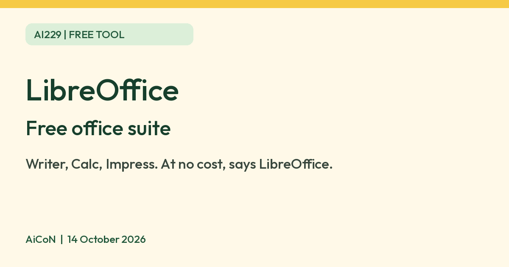

LibreOffice®: a free office suite with "no forced AI"
LibreOffice says its office tools are at no cost to you. Its page title says "no forced AI". Here is what it needs, what it collects, and what we did not test.

LibreOffice community logo
What it is
LibreOffice is an office suite made by the LibreOffice community and The Document Foundation, a non-profit based in Berlin. Its homepage lists six tools: Writer (word processor), Calc (spreadsheets), Impress (presentations), Draw (diagrams and drawings), Base (databases) and Math (formulas). It is a desktop program you install on your computer. It is not a Google or Microsoft online service.
Is it free?
Yes. LibreOffice's homepage says it provides "unfettered access to our office productivity tools, at no cost to you." Its licence page says LibreOffice is Free Software under the Mozilla Public License v2.0. We found no paid tier on the pages we read. Donations are optional.
About AI
LibreOffice's own page title reads "Free and private office suite, no forced AI". We did not find a page explaining what that phrase covers, so treat it as the vendor's claim. It is not an AI tool.
What your computer needs
- Windows: Windows 10 or 11 (also Server 2012 to 2022), 256 MB RAM (512 MB recommended), up to 1.5 GB disk space, Pentium-compatible PC and 1280×800 display. Administrator rights needed for installation.
- Mac: macOS 11 or newer, Intel or Apple silicon, 512 MB RAM, up to 800 MB disk space and 1280×800 display.
- Linux: kernel 4.18 or newer, glibc 2.27 or newer, x86-64-v2 CPU for TDF builds, 256 MB RAM (512 MB recommended), up to 1.55 GB disk space, 1280×800 display and compatible desktop GUI. The official page recommends your Linux distribution's installation method.
India
- We found no India-specific statement or age limit on the pages we read. The homepage lists many interface languages. We did not confirm which Indian languages the interface or help covers, so check the download page.
- AiCoN advice: download it from libreoffice.org and not from other sites.
Privacy and data
- LibreOffice's web privacy policy covers its website and downloads. It says the site logs your IP address and device details for up to 14 days (longer logs may be kept after IP addresses are removed or masked), and uses Matomo analytics with the IP address partly masked.
- It says that when LibreOffice crashes, a crash report is created. You are asked before each report is sent, and the policy says it does not include your documents. You can turn crash reports off in Options. Reports include system details, full install paths, stack traces, CPU registers and small memory fragments; the policy says raw reports are deleted after processing and anonymised reports are kept indefinitely.
- The policy is written in German, with an English translation linked on the page. We read the German text.
Frequently asked questions
Is LibreOffice free?
Yes. LibreOffice says its tools come at no cost, and its licence page says it is Free Software.
Is it AI?
No. It is an office suite. Its page title says "no forced AI".
Does it open Word and Excel files?
We did not check, so we make no claim. Test it with a copy of your file first.
How to start
- Open the official download page, choose your operating system and CPU architecture, and check the current requirements. This guide makes no version claim.
- On Linux, follow your distribution's recommended installation method. On Windows or Mac, use the official package for your system. Back up your files first.
- Open Writer for documents, Calc for spreadsheets or Impress for presentations. If using Base, check the Java requirement for your system.
- Try a copy of an important file before relying on it. AiCoN did not install LibreOffice or test Word/Excel file compatibility.
What changed since this post?
Official product, download, licence, system requirements, privacy and TDF trademark/logo pages rechecked on 14 October 2026. Free remains the vendor's claim and MPL 2.0 the published software licence. "No forced AI" is quoted only from the vendor page title, not independently tested. Java guidance now covers Windows and Mac as well as Linux. Community logo without the restricted TDF subline is used. India and Indian-language availability remain unverified. No version or file-compatibility claim is made.
Sources: LibreOffice, Download, Licences, System requirements, Privacy policy, TDF Mark Policy, TDF Logo Policy. Checked 14 October 2026.